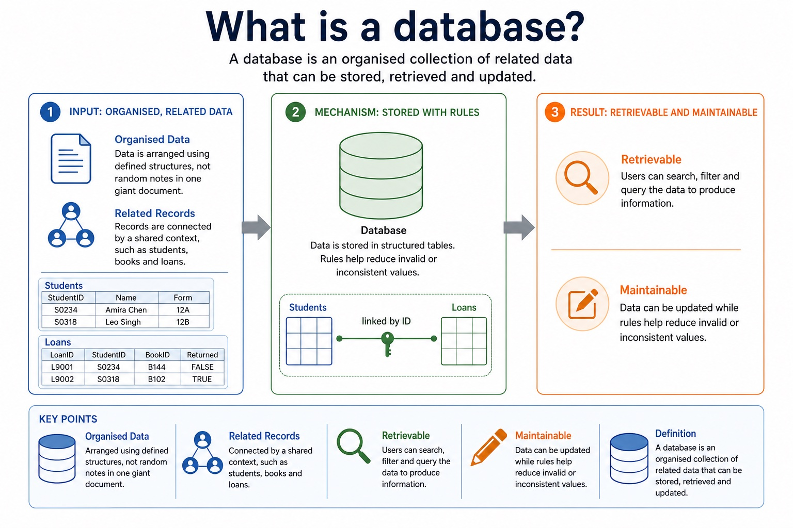
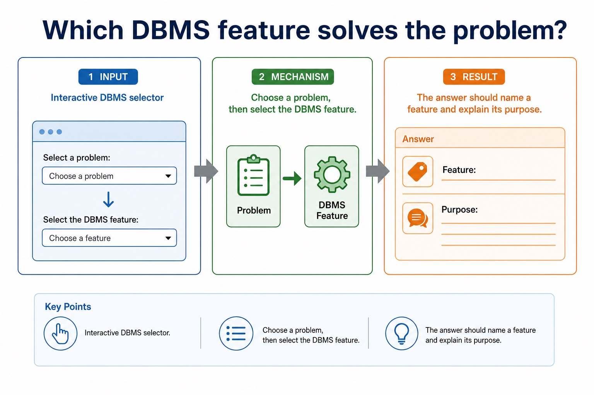
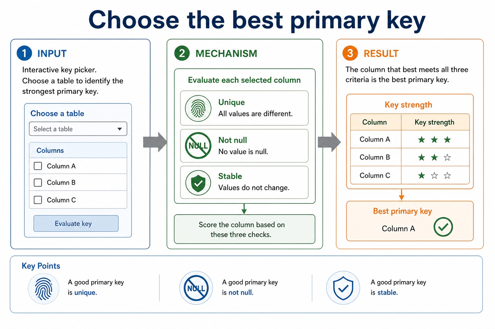
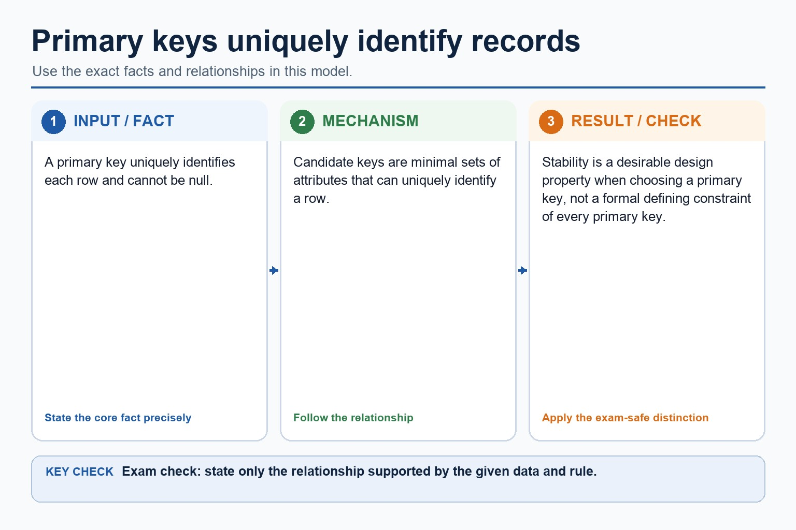
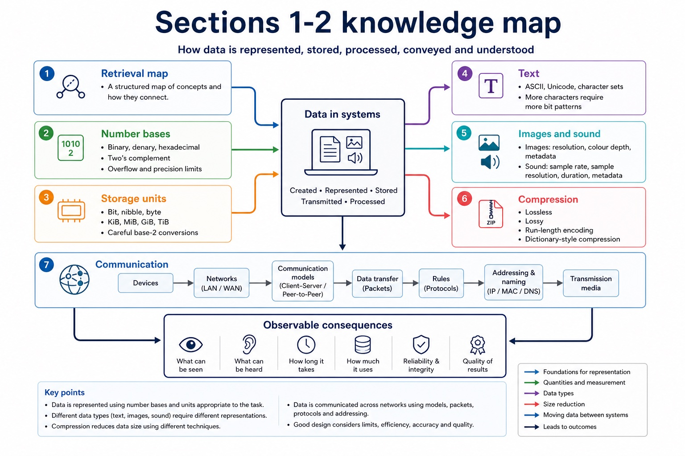
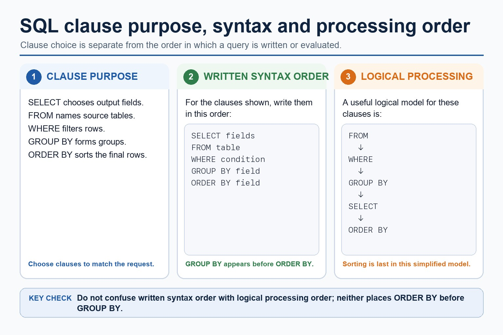

S8.01, S8.02 | Learn from the diagrams, test the method, then choose the practice you need.
Choose a Quick, Full or Deep route
Quick route
Use the diagnostic, learning objectives, first worked example and foundation question. Stop once the learner can explain the central distinction accurately.
Full route
Use every knowledge-point material set, the worked method, the terminology check and all questions.
Deep route
Add the prerequisite refresher, ask learners to connect the concept checklist, discuss the labelled extension and complete a transfer question without a model answer.
Part 1 | optional depth
Prerequisite knowledge and quick diagnostic
Recall S8.01 before starting this lesson.
Give one accurate definition or method step before continuing. If it is missing, revisit only that prerequisite.
Open optional prerequisite refresher
Version 2 requires both sides of the comparison: limitations of file-based storage/retrieval and relational-database features that address those limitations. Benefits must be linked to a mechanism rather than asserted generically.
Explain limitations of file-based systems and how relational databases address them.
Part 2 | knowledge-point material sets
Learn each point through visuals
Follow the map, the three-part explanation and the concrete cue. Open precise wording only after the idea is clear.
Open the concept checklist and choose what to teach
Contrastlimitations of file-based storage/retrieval and relational-database features that address those limitations
EvidenceBenefits must be linked to a mechanism rather than asserted generically
DecisionA relational database addresses these limitations by separating entities into linked tables, storing shared facts once, identifying records with keys and enforcing relationships and constraints centrally
S8.01 diagrams
1 / 5
01
Diagram · 1 of 5
Flat-file vs relational comparison
Open text transcript
Flat-file
Relational
Structure
Single table
Multiple linked tables
Redundancy
More likely because related details are repeated
Reduced because shared data can be stored once
02
Concrete example · 2 of 5
Relational database
Open text transcript
A relational database stores data in multiple tables that are linked using shared fields. Shared facts can be stored once and referenced where needed.
MemberID | Name | ParentEmail
M104 | Amira Chen | lee@example.com
M211 | Leo Singh | patel@example.com
linked by MemberID
Enrolment
EnrolID | MemberID | Session | FeePaid
E501 | M104 | Python | TRUE
03
Comparison · 3 of 5
Section 8 basics so far
Open text transcript
Monthly checkpoint
This checkpoint connects Lessons 079-080 without becoming a full exam.
2. Compare one-table repeated data vs linked tables with reduced redundancy.
3. Design choose data types and constraints for five fields in a small scenario.
04
Comparison · 4 of 5
Relational design: what earns marks?
Open text transcript
Design review
Primary key Uniquely identifies a record in one table. It must be unique and reliable.
Foreign key Stores a value that matches a primary key in another table, creating a relationship.
Normalisation Separates repeated data into related tables to reduce duplication and update errors.
05
Comparison · 5 of 5
Core relational words for this lesson
Open text transcript
This is the vocabulary doorway. Later lessons will go deeper into keys, relationships, E-R diagrams, normalisation and SQL.
A thing about which data is stored
Student, Book, Loan
A set of records about one entity
Student table
Record / tuple
One row in a table
S0234, Amira Chen, 12A
Open precise syllabus wording
Explain limitations of file-based systems and how relational databases address them.
Version 2 requires both sides of the comparison: limitations of file-based storage/retrieval and relational-database features that address those limitations. Benefits must be linked to a mechanism rather than asserted generically.
Version 2 explicitly names entity, table, record, field, tuple, attribute, primary key, candidate key, secondary key, foreign key, one-to-one, one-to-many, many-to-many, referential integrity and indexing. Secondary key is retained as a distinct retrieval term, not an alias for an alternate candidate key.
Supporting diagram library
1 / 12
01
Diagram · 1 of 12
Data vs information
Open text transcript
Data is raw facts and values. Information is data that has been processed, organised or interpreted so it has meaning.
Raw data
BookID=B144 , DueDate=2026-06-20 , Returned=FALSE
Processing
compare due date, filter not returned, group by student
Information
"Amira has two overdue books and needs a reminder."
Loan dates, student IDs, book IDs
02
Diagram · 2 of 12
What is a database?

Open text transcript
A database is an organised collection of related data that can be stored, retrieved and updated.
Organised Data is arranged using defined structures, not random notes in one giant document.
Related Records are connected by a shared context, such as students, books and loans.
Retrievable Users can search, filter and query the data to produce information.
Maintainable Data can be updated while rules help reduce invalid or inconsistent values.
StudentID | Name | Form
S0234 | Amira Chen | 12A
S0318 | Leo Singh | 12B
03
Diagram · 3 of 12
Which DBMS feature solves the problem?

Open text transcript
Interactive DBMS selector
Choose a problem, then select the DBMS feature.
The answer should name a feature and explain its purpose.
04
Diagram · 4 of 12
Is it data, information, database, or DBMS?
Open text transcript
Interactive concept sorter
Scenario item
Choose an item, then classify it.
Reasoning will appear here.
05
Diagram · 5 of 12
Why repeated data causes anomalies
Open text transcript
An anomaly is a problem caused when data is inserted, updated or deleted in a structure that stores repeated facts poorly.
Update anomaly A parent email is changed in one row but not in another, so the same member has two different emails.
Insertion anomaly A new member cannot be recorded until they join a session, because member details only exist in lesson rows.
Deletion anomaly Deleting a cancelled session row may accidentally delete the only copy of a member's contact details.
06
Diagram · 6 of 12
Flat-file database
Open text transcript
A flat-file database stores data in a single table. It is simple, but related data may be repeated in many records.
MemberID
ParentEmail
Amira Chen
lee@example.com
Robotics
Leo Singh
patel@example.com
07
Diagram · 7 of 12
Choose the best primary key

Open text transcript
Interactive key picker
Choose a table to identify the strongest primary key.
A good primary key is unique, not null and stable.
08
Diagram · 8 of 12
Primary keys uniquely identify records

Open text transcript
A primary key uniquely identifies each row and cannot be null.
Candidate keys are minimal sets of attributes that can uniquely identify a row.
Stability is a desirable design property when choosing a primary key, not a formal defining constraint of every primary key.
09
Diagram · 9 of 12
Section 8 knowledge map

Open text transcript
Retrieval map
Data and DBMS data vs information; DBMS roles; avoiding flat-file limitations
Tables and keys records, fields, data types, constraints, primary keys and foreign keys
Design entity-relationship modelling and normalisation to reduce duplication
SQL retrieval SELECT , FROM , WHERE , ORDER BY , aggregates and joins
SQL modification INSERT , UPDATE , DELETE , field/value matching and safe WHERE
Protection validation, verification, security controls, backups and restore testing
10
Diagram · 10 of 12
Do not swap the security vocabulary
Open text transcript
Protection review
Validation Checks data follows rules, such as range, type, format or presence.
Verification Checks entered data matches a source, using proofreading or double entry.
Security and backup Security restricts access; backup enables recovery after loss or corruption.
11
Diagram · 11 of 12
SQL clauses: choose the clause that matches the request

Open text transcript
For the clauses shown, written syntax order is SELECT, FROM, WHERE, GROUP BY, ORDER BY.
A simplified logical processing order is FROM, WHERE, GROUP BY, SELECT, ORDER BY.
GROUP BY forms groups and ORDER BY sorts the final rows.
Written syntax order and logical processing order are different.
12
Diagram · 12 of 12
Trace one mixed SQL result
Open text transcript
Interactive SQL tracer
Category
Networks
Computing
Literature
Databases
Choose a query to see the result.
Apply the idea
Worked method
01Keys for a student table
02Delete a department
03Use keys and an index
04In Student(StudentID, Email, TutorGroup), StudentID and Email may be candidate keys if both are unique and minimal; StudentID is selected as primary.
05TutorGroup can be a secondary key for retrieving all students in one group even though many records share the value.
06An index on TutorGroup can provide a faster lookup route.
Open precise terminology and exam facts
Version 2 requires both sides of the comparison: limitations of file-based storage/retrieval and relational-database features that address those limitations. Benefits must be linked to a mechanism rather than asserted generically.
Version 2 explicitly names entity, table, record, field, tuple, attribute, primary key, candidate key, secondary key, foreign key, one-to-one, one-to-many, many-to-many, referential integrity and indexing. Secondary key is retained as a distinct retrieval term, not an alias for an alternate candidate key.
A file-based approach stores data in separate application files. The same fact may be repeated in several files or records, causing redundancy and wasted storage. Updating only some copies creates inconsistency; insertion and deletion can also lose or require unrelated facts. Separate files may use incompatible formats, isolate data, duplicate validation/security code and make shared querying, concurrent access, backup and recovery harder to manage.
A relational database addresses these limitations by separating entities into linked tables, storing shared facts once, identifying records with keys and enforcing relationships and constraints centrally. A DBMS supplies shared query processing, integrity, security, access rights and backup. These mechanisms reduce particular file-based risks; a relational design is not automatically smaller, simpler or error-free.
Record and tuple are corresponding relational terms for one row; field and attribute are corresponding terms for one column.
Relational databases reduce selected file-based limitations by storing shared facts once in linked tables with centrally enforced rules.
An entity is a real-world thing about which data is stored and is commonly represented by a table. A table contains records (tuples); each record describes one entity occurrence. A field (attribute) is one named property or column. These paired terms are related but should not be collapsed into one definition.
A candidate key is a minimal field or field set that uniquely identifies a record. One candidate key is selected as the primary key. A secondary key is a field used as an additional retrieval or ordering route and need not be unique; it is not another name for an unselected candidate key. A foreign key refers to a key in a related table. An index is a lookup structure built on one or more fields: it can speed retrieval but uses storage and must be maintained after changes.
A foreign key is an attribute in one table that refers to a primary/candidate key in another table. Referential integrity requires every non-null foreign-key value to match an existing referenced key.
A one-to-one relationship links one record on each side. A one-to-many relationship links one parent record to many child records. A many-to-many relationship is normally implemented through a linking entity/table that creates two one-to-many relationships. Referential integrity prevents orphan records: insert, update and delete operations may be rejected or handled by a defined cascade/null policy, but must not silently leave an invalid reference.
A relational database stores data in tables made of records and fields. A primary key uniquely identifies a record; a foreign key links to a primary key in another table and creates a relationship.
Indexing creates an additional lookup structure for one or more fields so matching records can be located more quickly. The index consumes storage and must be updated when indexed data change.
Beyond syllabus / 延伸知识（不要求背诵）
production databases also manage transactions and concurrent users; these ideas extend the syllabus model of integrity and access control.
Part 3 | select by learner need
Practice by question type
explainexplainfoundation6 marks
Question 1. A clinic repeats patient details in separate appointment, billing and treatment files. Explain three file-based limitations and a relational-database feature that addresses each one.
Show answer and marking guidance
Answer: repeated patient facts cause redundancy or wasted storage; linked tables store a shared patient fact once; separate copies can become inconsistent after partial updates; central keys/constraints and one stored fact improve consistency; isolated files/formats make combined retrieval or control difficult; DBMS query, integrity, access-right or backup service addresses the named difficulty
Marking guidance: Do not award a generic claim such as 'relational is better' without a named limitation, mechanism and consequence.
Common error: For the command word explain, perform that exact action; do not replace it with an unrelated fact.
designrecallapplication7 marks
Question 2. A school currently repeats student details in a loan file. Propose a relational design and write a two-table query listing StudentName and DueDate for unreturned loans.
Show answer and marking guidance
Answer: identifies redundancy/inconsistency in the repeated file; separates Student and Loan with suitable primary keys; uses StudentID as a foreign key in Loan and preserves referential integrity; SELECT contains StudentName and DueDate; uses Student INNER JOIN Loan; ON matches Student.StudentID to Loan.StudentID; WHERE Loan.Returned = FALSE
Marking guidance: Do not accept a three-table query, comma-style join, unexplained table split or unsupported claim that normalisation alone validates every value.
Common error: Do not repeat the same point in different words; each mark needs a separate idea or method step.
applyrecalltransfer2 marks
Question 3. Which relational feature connects an order to its customer?
Show answer and marking guidance
Answer: A foreign key in Order referring to the Customer primary key.
Marking guidance: Award one mark for each distinct, technically accurate point or method step.
Common error: Do not copy the worked example unchanged; transfer the method and check it against the new context.
Related past-paper indexes
Reference
Marks
Command word
Question type
9618/12/W/24 Q6(i)
6
explain
explain
9618/11/W/24 Q3(i)
4
complete
recall
9618/11/W/24 Q2(a)
3
explain
explain
9618/11/W/24 Q2(i)
3
complete
recall
Index only: Cambridge question and mark-scheme wording is not reproduced on this public course page.
Part 4 | close when ready
Summary and exam reminders
Summary
Define from file-based systems to relational databases with the exact technical vocabulary expected by the syllabus.
Use the lesson method on a fresh context and show the intermediate decision, representation or calculation.
Match the shape of the answer to the command word and the available marks.
Check the final answer against the scenario instead of repeating a memorised sentence.
Common error to correct
Students often choose names as primary keys. Correction: a primary key must uniquely and reliably identify a record.
Exam technique
Follow the command word: state gives a fact; explain links a cause to a consequence; compare covers both sides.
Match the number of independent points or method steps to the available marks.
For from file-based systems to relational databases, use the exact technical term before applying it to the scenario.